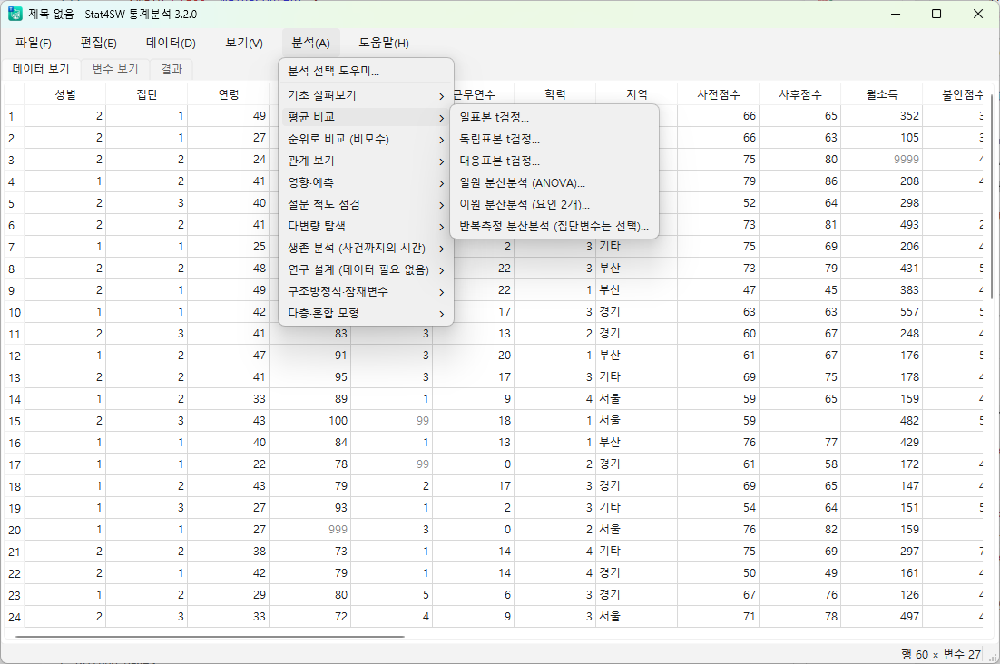

Stat4SW
사회복지 연구자와 실무자를 위한 맞춤형 전문 통계 솔루션
복잡하고 값비싼 상용 통계 패키지 대신, 사회복지 실무와 학술 연구에 꼭 필요한 통계 기법들을 누구나 쉽고 정확하게 분석할 수 있도록 개발된 오픈 통계 프로젝트입니다.
사용 목적과 환경에 맞게 두 가지 독립 에디션으로 제공됩니다.

Stat4SW v3.0 Windows 실행 화면
에디션 선택
Stat4SW v3.0
"구조방정식(SEM) & 대용량 로컬 데이터 완벽 지원"
파이썬(Python & PySide6) 기반 독립 실행 프로그램입니다. 인터넷 연결 없이 100% 로컬에서 동작하며, 구조방정식(SEM)과 확인적 요인분석(CFA) 등 고급 학술 다변량 분석을 지원합니다.
- 🏛️ SEM & CFA 탑재 (lavaan 문법, CFI/TLI/RMSEA 산출)
- 📊 SPSS 스타일 데이터/변수 2분할 뷰
- ⚡ 50만 행 대용량 데이터 고속 처리
- 🔒 완전 오프라인 · 로컬 데이터 보안
Windows 10/11 64bit · 약 65MB 단일 설치 파일
Stat4SW v2.0
"무설치 웹 실행 & Gemini AI 통계 결과 자동 해석"
구글 스프레드시트(GAS) 기반으로 별도 설치 없이 즉시 사용 가능합니다. 생성형 AI(Gemini)가 통계 결과를 APA 논문 형식 학술 문장으로 자동 작성해 줍니다.
- 🤖 Gemini AI 자동 통계 해석문 생성
- ☁️ 무설치 원클릭 · Google 계정만으로 실행
- 📋 APA 스타일 표 자동 렌더링
- 👥 구글 드라이브 팀 협업 공유
Google 계정 로그인 필요 · 무료 클라우드 템플릿
⚖️ 에디션 비교
| 구분 | 💻 v3.0 Windows 설치형 | 🌐 v2.0 Google Sheets |
|---|---|---|
| 구동 환경 | Windows 10 / 11 (64bit) 로컬 PC | 웹 브라우저 (Chrome, Edge 등) |
| 기반 기술 | Python 3.12, PySide6 (Qt), semopy | Google Apps Script (JavaScript) |
| 설치 필요 | 설치 파일 실행 필요 (약 65MB, 간편) | 무설치 (시트 사본 생성 즉시 실행) |
| AI 자동 해석 | ❌ 미탑재 (통계 연산 엔진에 집중) | ✅ Gemini API 연동 자동 해석문 |
| 고급 학술 분석 | ✅ SEM, CFA, 다층모형 지원 | t검정, ANOVA, 상관, 회귀, 신뢰도 등 |
| 데이터 수용량 | 수만 ~ 50만 행 고속 처리 | 권장 5,000 ~ 최대 5만 행 |
| 인터넷 연결 | 완전 불필요 (100% 오프라인) | 인터넷 필수 (클라우드 기반) |
| 추천 사용자 | 논문 연구자, 석·박사생, 대용량 분석 | 사회복지관 실무자, 사업 평가 담당자 |
💻 Stat4SW v3.0 상세 안내
파이썬 엔진으로 한 단계 더 강력해진 고성능 데스크톱 통계 소프트웨어
Stat4SW v3.0은 클라우드 브라우저의 한계를 뛰어넘어, 연구 논문 작성을 위한 고급 통계 분석을
로컬 PC에서 즉각적으로 수행할 수 있도록 파이썬(PySide6)으로 새롭게 개발된 독립 프로그램입니다.
특히 구조방정식 모형(SEM)과 확인적 요인분석(CFA) 엔진이 탑재되어 복잡한 경로 분석과 잠재변수 측정을 손쉽게 검증할
수 있습니다.
구조방정식 모형 (SEM)
lavaan 호환 문법 지원, 직접·간접·총효과 분해 및 CFI, TLI, RMSEA, SRMR 등 모델 적합도 지수 산출.
확인적 요인분석 (CFA)
요인 적재량, 개념신뢰도(CR), 평균분산추출값(AVE) 및 판별타당도를 원클릭으로 분석합니다.
SPSS 스타일 데이터/변수 뷰
하단 탭 전환으로 데이터 격자와 변수 속성(라벨, 척도수준, 결측치 코드)을 손쉽게 편집.
CSV / XLSX 직접 지원
기존 설문 데이터를 변환 없이 직접 열고, 결과를 표 서식 그대로 엑셀이나 워드로 복사 가능.
💡 설치 및 실행 방법
- 상단 [Windows 설치 파일 다운로드] 버튼으로
Stat4SW-3.3.0-설치.exe를 내려받습니다. - 설치 파일을 더블클릭하여 실행합니다. (Windows SmartScreen 경고 시 [추가 정보] → [실행])
- 관리자 권한 없이도 사용자 폴더에 안전하게 설치되며, 시작 메뉴에 등록됩니다.
- 시작 메뉴의 Stat4SW 통계분석을 실행하여 바로 분석을 시작하세요.
🌐 Stat4SW v2.0 상세 안내
프로그램 설치 없이 웹에서 바로 쓰는 생성형 AI 기반 지능형 통계 패키지
Stat4SW v2.0은 사회복지 현장 실무자가 복잡한 수치 해석에 들이는 시간을 획기적으로 줄여주는
생성형 AI(Gemini) 연동형 온라인 통계 시트입니다.
구글 스프레드시트 안에서 [Stat4SW 통계분석] 대화상자를 열어 변수를 선택하면 통계 분석과 함께
APA 논문 규격 서술문과 현장 평가보고서용 시사점이 자동 작성됩니다.
🖥️ Stat4SW v2.0 · 4단계 스마트 분석 프로세스
각 변수의 척도(명목, 서열, 연속)를 색상 배지로 자동 분류하고 결측 문항 수를 한눈에 파악합니다.
대응표본 t-검정, 상관분석 등 기법을 선택하고 정규성(Shapiro-Wilk) 검정 및 효과크기(Cohen's d)를 산출합니다.
t값, 유의확률, 효과크기를 바탕으로 APA 논문 규격 서술문과 보고서용 시사점을 자동 생성합니다.
[시트로 내보내기] 버튼 한 번으로
결과 탭에 완성된 표 서식과 해석문이 영구 저장됩니다.
🔍 Stat4SW v2.0 구글 시트 실행 화면 (클릭 시 확대)
📜 버전 이력
사회복지 현장과 학술 연구 요구에 발맞춘 지속적인 진화 과정입니다.
오프라인 데스크톱 전면 전환: 파이썬(PySide6 Qt) 기반 독립 실행 소프트웨어로 전환, 구조방정식(SEM) & CFA 엔진 탑재, 50만 행 고속 처리, 100% 로컬 데이터 보안 환경.
생성형 AI 통계 결과 해석 어시스턴트 도입: t값, 유의확률, 효과크기를 바탕으로 APA 논문 규격의 학술 서술문과 사회복지 평가 보고서용 실무 시사점을 원클릭 자동 작성.
구글 스프레드시트 기반 전문 통계 패키지 최초 릴리즈: 변수 척도 자동 판별, 대응표본 t-검정, 피어슨 상관분석, 정규성 검정 및 효과크기 산출.
📂 v1.0 원본 시트 사본 열기